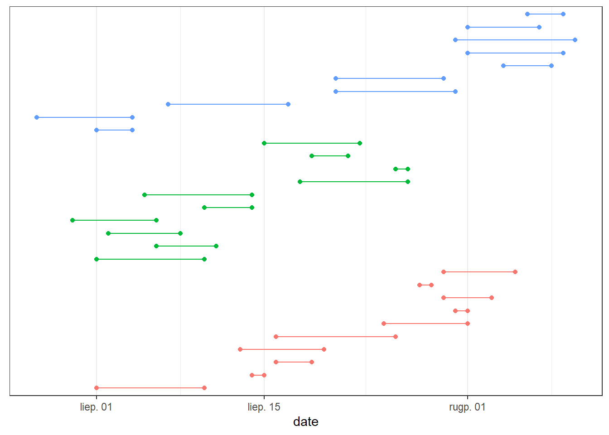

Grouping Overlapping Date Ranges
SQL
It’s pretty straightforward to group rows in SQL if their date ranges are consecutive or have fixed gaps.1 It’s much harder if you want to group overlapping date ranges. I personally haven’t used this trick in my own practice but there are use cases for it. For example, if a chat agent can work with multiple clients at once, your chat sessions will overlap. But you can’t just aggregate the duration of the chats if you want to estimate the agent active time. That would give you an overestimate! Generally, grouping overlapping date ranges is a useful trick for whenever you want to know “active hours”.
Sample Data
The sample data are randomly generated date intervals (i.e. they have a start date and an end date), generated in a way so that each colored group’s intervals overlap most of the time.
SQL Solution Step-by-Step
The following SQL code works in four steps and let’s imagine we’re an interval in this dataset:
- First of all, the
BETWEEN UNBOUNDED PRECEDING and 1 PRECEDINGis the key to this trick. For every row, it answers the question “which of the intervals that started before me have the latest end date?”.
with prev_date as (
SELECT
ROW_NUMBER() OVER (ORDER BY group_id, date_from, date_to) AS date_rank,
group_id,
date_from,
date_to,
MAX(date_to) OVER (PARTITION BY group_id ORDER BY date_from, date_to ROWS BETWEEN UNBOUNDED PRECEDING AND 1 PRECEDING) AS previous_date_to
FROM
overlapping_ranges
)
select
*
from prev_date
order by group_id, date_from| date_rank | group_id | date_from | date_to | previous_date_to |
|---|---|---|---|---|
| 1 | 1 | 2024-07-01 | 2024-07-10 | NA |
| 2 | 1 | 2024-07-13 | 2024-07-20 | 2024-07-10 |
| 3 | 1 | 2024-07-14 | 2024-07-15 | 2024-07-20 |
| 4 | 1 | 2024-07-16 | 2024-07-19 | 2024-07-20 |
| 5 | 1 | 2024-07-16 | 2024-07-26 | 2024-07-20 |
| 6 | 1 | 2024-07-25 | 2024-08-01 | 2024-07-26 |
| 7 | 1 | 2024-07-28 | 2024-07-29 | 2024-08-01 |
| 8 | 1 | 2024-07-30 | 2024-08-03 | 2024-08-01 |
| 9 | 1 | 2024-07-30 | 2024-08-05 | 2024-08-03 |
| 10 | 1 | 2024-07-31 | 2024-08-01 | 2024-08-05 |
- Then, we check whether the interval before me ended before I had started or after I had started.
with prev_date as (
SELECT
ROW_NUMBER() OVER (ORDER BY group_id, date_from, date_to) AS date_rank,
group_id,
date_from,
date_to,
MAX(date_to) OVER (PARTITION BY group_id ORDER BY date_from, date_to ROWS BETWEEN UNBOUNDED PRECEDING AND 1 PRECEDING) AS previous_date_to
FROM
overlapping_ranges
),
islands as (
SELECT
*,
CASE WHEN previous_date_to >= date_from THEN 0 ELSE 1 END AS island_start_id
from prev_date
)
select
*
from islands
order by group_id, date_from| date_rank | group_id | date_from | date_to | previous_date_to | island_start_id |
|---|---|---|---|---|---|
| 1 | 1 | 2024-07-01 | 2024-07-10 | NA | 1 |
| 2 | 1 | 2024-07-13 | 2024-07-20 | 2024-07-10 | 1 |
| 3 | 1 | 2024-07-14 | 2024-07-15 | 2024-07-20 | 0 |
| 4 | 1 | 2024-07-16 | 2024-07-19 | 2024-07-20 | 0 |
| 5 | 1 | 2024-07-16 | 2024-07-26 | 2024-07-20 | 0 |
| 6 | 1 | 2024-07-25 | 2024-08-01 | 2024-07-26 | 0 |
| 7 | 1 | 2024-07-28 | 2024-07-29 | 2024-08-01 | 0 |
| 8 | 1 | 2024-07-30 | 2024-08-03 | 2024-08-01 | 0 |
| 9 | 1 | 2024-07-30 | 2024-08-05 | 2024-08-03 | 0 |
| 10 | 1 | 2024-07-31 | 2024-08-01 | 2024-08-05 | 0 |
- Finally, we run a rolling
SUMover the second step to find consecutive overlaps. Essentially, if the interval before me overlapped with someone, if I’m overlapping with the interval before me, and the interval after me overlapping with someone, that is good enough to say that yes, all of these three intervals form a chain of overlapping intervals.
with prev_date as (
SELECT
ROW_NUMBER() OVER (ORDER BY group_id, date_from, date_to) AS date_rank,
group_id,
date_from,
date_to,
MAX(date_to) OVER (PARTITION BY group_id ORDER BY date_from, date_to ROWS BETWEEN UNBOUNDED PRECEDING AND 1 PRECEDING) AS previous_date_to
FROM
overlapping_ranges
),
islands as (
SELECT
*,
CASE WHEN previous_date_to >= date_from THEN 0 ELSE 1 END AS island_start_id,
SUM(CASE WHEN previous_date_to >= date_from THEN 0 ELSE 1 END) OVER (ORDER BY date_rank) AS island_id
from prev_date
)
select
*
from islands
order by group_id, date_from| date_rank | group_id | date_from | date_to | previous_date_to | island_start_id | island_id |
|---|---|---|---|---|---|---|
| 1 | 1 | 2024-07-01 | 2024-07-10 | NA | 1 | 1 |
| 2 | 1 | 2024-07-13 | 2024-07-20 | 2024-07-10 | 1 | 2 |
| 3 | 1 | 2024-07-14 | 2024-07-15 | 2024-07-20 | 0 | 2 |
| 4 | 1 | 2024-07-16 | 2024-07-19 | 2024-07-20 | 0 | 2 |
| 5 | 1 | 2024-07-16 | 2024-07-26 | 2024-07-20 | 0 | 2 |
| 6 | 1 | 2024-07-25 | 2024-08-01 | 2024-07-26 | 0 | 2 |
| 7 | 1 | 2024-07-28 | 2024-07-29 | 2024-08-01 | 0 | 2 |
| 8 | 1 | 2024-07-30 | 2024-08-03 | 2024-08-01 | 0 | 2 |
| 9 | 1 | 2024-07-30 | 2024-08-05 | 2024-08-03 | 0 | 2 |
| 10 | 1 | 2024-07-31 | 2024-08-01 | 2024-08-05 | 0 | 2 |
- And of course, we aggregate on the result of the rolling of
SUMto get the start and end dates of the whole overlapping cluster of rows.
Final SQL Solution
Here’s the full SQL solution:
with prev_date as (
SELECT
ROW_NUMBER() OVER (ORDER BY group_id, date_from, date_to) AS date_rank,
group_id,
date_from,
date_to,
MAX(date_to) OVER (PARTITION BY group_id ORDER BY date_from, date_to ROWS BETWEEN UNBOUNDED PRECEDING AND 1 PRECEDING) AS previous_date_to
FROM
overlapping_ranges
),
islands as (
SELECT
*,
CASE WHEN previous_date_to >= date_from THEN 0 ELSE 1 END AS island_start_id,
SUM(CASE WHEN previous_date_to >= date_from THEN 0 ELSE 1 END) OVER (ORDER BY date_rank) AS island_id
from prev_date
)
select
group_id,
cast(island_id as varchar) as island_id,
min(date_from) as date_from,
max(date_to) as date_to
from islands
group by group_id, island_idThis solution is a variation on the island and gap problem, it just changes how we define the “island start” column. Also, you can’t just use a lag(date_to,1) because you might overlap with the an interval three before you but not the one before you. Visually, this is our end result superimposed on the initial dataset. The derived intervals are shaded areas:
overlapping_islands <- overlapping_islands %>%
mutate(island_id = as.character(row_number()))
overlapping_dates %>%
plot_timeline() +
facet_grid(group_id~.) +
geom_rect(data = overlapping_islands, aes(y = NULL, x = NULL, ymin = date_from, ymax = date_to, xmin = -Inf, xmax = Inf, fill = island_id), alpha = 0.05) +
guides(fill = FALSE)
Footnotes
Blog posts pending!↩︎